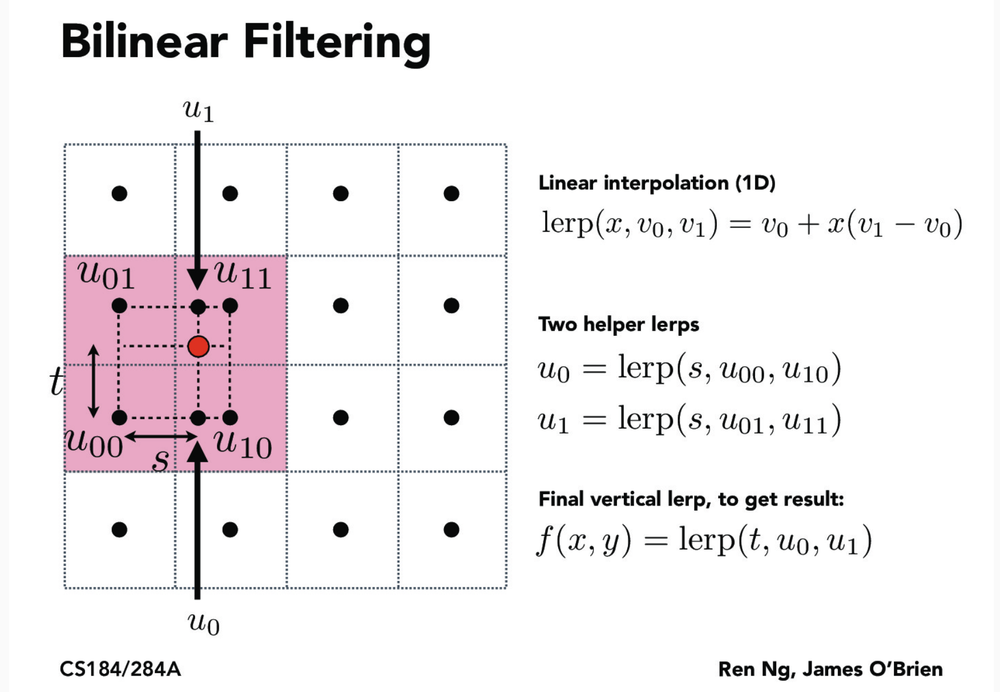

In this project, I implemented techniques to do with rasterizing triangles under different scenarios and considerations. First, I implemented the basic point-in-triangle test using the three-line-test method to get what mostly resembled a triangle onto the screen. In task 2, this was improved upon by supporting supersampling so that jaggies and the like were smoothed. Task 3 added the ability to transform shapes, allowing us to manipulate cubeman. In the second half, we got more advanced, implementing barycentric interpolation to allow for gradient like coloring. Lastly, we added support for filling our triangles with a texture, first adding support for pixel sampling in the form of nearest neighbor and bilinear interpolation. We then took care of issues to do with minimization, enabling texture level sampling, backed by mipmaps, on the basis of the nearest level and linearly interpolating the closest two levels.
Rasterizing a triangle, in the simplest sense, involves iterating over all the screen pixels and determining whether each pixel lies in the triangle, coloring that pixel the color of the triangle if so. From the perspective of functions, this process can be seen as involving sampling each screen pixel using a function that determines whether that pixel is in the triangle. The three-line test was used as the function to determine whether a point was in the triangle or not, and it works as described in the following sentences. The three lines <x1-x0,y1-y0>, <x2-x1,y2-y1>, and <x0-x2,y0-y2> were created in vector form. Three normal vectors were then formed by creating a new vector <-y, x> for each line using the components of the line vector. Finally, a vector V_i representing the origin of the line to the location of the screen pixel (the center of the pixel) was created for each line i. By the definition of the dot product, the cosine of the angle between two vectors determines the sign of the operation, which indicates in the case of taking the dot product between the normal vector of the line and the V_i vector which side of the line the pixel is on. Depending on the winding order of the vertices, the dot product should be <= 0 or >=0 between each V_i vector and the normal vector of the associated line for a point in the triangle. This point is then colored in.
The rasterization algorithm that I implemented is no worse than one that checks each sample within the bounding box of the triangle since this is exactly what is being done by this algorithm. Given the three vertices of the triangle, I found the minimum and maximum values for both the x and y coordinate values and iterated over the box formed by these values which is exactly the box that bounds the triangle formed by the three vertices.
In task 1, we wrote Colors to a sample_buffer and then unpacked the red, blue, and green values into the frame_buffer in resolve_to_framebuffer–there are three slots for every pixel for these values in the frame_buffer. sample_buffer is a vector and frame_buffer is a character array three times the size. However, there was a one-to-one relationship between the two since Color encapsulated the three red, blue, and green for a given pixel and it was only a matter of unpacking. In task 2, I took the suggestion in the project specification to rasterize an image at a higher resolution and then downsample when outputting to the frame_buffer. To do this, I resized the sample_buffer to width*height*sample_rate. Then, for every pixel, I uniformly sampled at “sqrt(sample_rate) * sqrt(sample_rate) grid locations distributed over the pixel area” as suggested in the specification and put the result in the respective grid slot in the sample_buffer where each pixel occupied a range of [sample_rate*x,sample_rate*x + sqrt(sample_rate)) and [sample_rate*y,sample_rate*y + sqrt(sample_rate)) when you think of the 2D version of sample_buffer. I did this in rasterize_triangle itself and resized the sample_buffer during initialization, set_sample_rate, and set_framebuffer_target. For the case of points and lines, I took the color the pixel was to be and set all the locations in the supersampled grid to this color–this way, when taking the average, the results are still the same. In resolve_to_framebuffer, I took the sample_rate slots in the frame_buffer devoted to a pixel and averaged them, outputting the averaged color into frame_buffer. So, to summarize, the data structures used were the same, just resized. And the algorithms and rasterization pipeline changed when writing to the sample_buffer and when taking the results and placing them into the frame_buffer, supersampling in the former situation and downsampling in the latter.
Supersampleing is useful because instead of only referencing one location per pixel to determine whether it is in the triangle or not, we take sample_rate samples. This helps with aliasing issues like jaggies and gaps shown in task 1 in the cases of boundary pixels and skinny regions of triangles in which some part of the triangle goes through the pixel but not at its center, so it would be ignored in task 1. These pixels have a smoothed value when supersampling as chances are that we have sampled a region of the pixel in which the triangle runs through, so the triangle color would be averaged in. This is how supersampling antialiases the triangle as in these troubled regions in which single sampling per pixel is insufficient to capture details, supersampling enables us to better do so.
Skinny triangle corners only run through a small sliver of the pixel. When sampling once, it is easy to miss ascertaining the fact that the triangle runs through the image if your one location does not lie in the triangle. However, when increasing the sample rate, you are much more likely to capture the fact that the triangle does indeed run through the pixel, so the color is averaged in.
Cubeman is a cricket umpire signaling a leg bye. The signal involves raising your left arm, raising your right leg so that you make a 90 degree angle with your knee, and touching your right leg with your right arm. To accomplish this, I first increased the x-axis scaling of each individual arm component to make the arms longer, rotated the arm components to be raised in the case of the left arm and lowered and bent for the right arm, translated the arms to be shoulder-height, and lastly I translated the lower right leg component upwards to simulate bending your leg.
Barycentric coordinates intuitively function on the basis of a weighted center of mass. We distribute “mass”--this may be color as is the case here–among the three vertices, say A, B, and C. Naturally, each weight has to be positive and the distribution has to equal one, so alpha + beta + gamma = one. Then, alpha*A + beta*B + gamma*C ends up being a weighted average with the point falling somewhere in the bounds of the triangle as these averages resolve to values within the range [min coordinate, max coordinate] for each coordinate by the properties of a weighted average (think of lerp functions, for example in tasks 5 and 6, for further intuition). Now, if weights are negative or the weights add to more than one, we get averages outside the bounds of [min coordinate, max coordinate] which result in points outside of the triangle.

Pixel sampling with reference to texture mapping involves starting with a (x,y) point in the screen space for which you want to color, mapping that point to a (u,v) coordinate in the texture space, sampling that point for the color value for the given texture at that location, and then that (x,y) point’s color is associated with that returned color. If the sampling rate is one, then the pixel will take on the color associated with whatever color the pixel’s center maps to. If the sampling rate is higher, the colors for each sample point will be averaged. For both nearest neighbor and bilinear interpolation, I referenced the following slide and Professor O’Brien’s explanation of it.
For nearest neighbor, I took the floor of both the u and v values a given (x,y) point mapped to. This is as I interpreted a textel’s location to be its center, so the textel nearest to a certain texture point is the one that it is in. This is consistent with what was described in lecture as Professor O’Brien referred to the red point mapping to u_11 in the case of nearest neighbor in lecture.
For bilinear interpolation, I sampled the four textels whose positions were closest to the point, as shown in the image above and determined s, t, the two helper lerps, and the final lerps exactly how it is shown in the picture. Like with the nearest neighbor, I interpreted a textel’s location as its center. So, depending on the continuous coordinates of a (u,v) point, the textels nearest to it may differ even if two points are within the bound of the same textel. Important edge cases included the edges. In these cases where one or more of the nearest textiles are out of bounds, I defaulted to nearest neighbor. This is was asked about in question #72bab on Ed and the solution was provided in answer #72bbc.
Below, artifacts to do with the zoomed in section are smoothed over in bilinear interpolation compared to nearest neighbor with respect to both sample rates.
The inherent difference between the two is the fact that nearest neighbor only samples one textel whereas bilinear interpolation samples four, so figuring out when this difference is integral is key. In the case of magnification, when the texture has too low of a resolution, nearest neighbor is going to result in artifacts like “blockiness” and jaggies. Bilinear interpolation does much better since taking into account the four nearest textels provides a smoothing force. The results may be a bit blurry, however, so it is not perfect. In the case of minification, the fact that one pixel covers a large range of textels is hard to capture with both strategies–adjacent screen pixels will map to textels with large amounts of space between them, which will cause image artifacts and aliasing issues.
When rasterizing an image, regions that are minimized have an issue in that not enough samples are taken. In this case, regardless of the pixel sampling method we choose, it is possible for adjacent screen pixels to be far apart texture wise, resulting in image artifacts. To take care of this issue, we essentially consider downsampled versions of images in which such large texture changes are smoothed out. We can consider many downsampled versions with what we learned as mipmapping. By measuring the rate of change of our texture coordinates for unit changes in screen coordinates, we can tell the extent of minification and choose the appropriate downsampled image–this is what was suggested in the specification in calculating the L and D values, and I implemented the same logic. From this calculation, we get a continuous value representing which downsample level to use, with higher values indicating a lower resolution image. To choose a discrete level, we can either round and sample from that level. Or, we can linearly interpolate and choose a weighted average of the results of the two textures. These two strategies were implemented in the L_NEAREST and L_LINEAR cases.
With respect to speed, the number of pixels sampled has the potential to be small with sampling a pixel 1 time or large sampling up to sixteen times. The number of additional samples increases linearly. At most, we would have to take width*height*16 samples. With respect to pixel sampling, we either do the nearest neighbor that involves one sample per pixel, or bilinear interpolation that involves 4 samples per pixel–assuming we keep the number of pixels sampled to one. Thus, worst case is width*height*4 samples. Lastly, with respect to level sampling, we either sample one level or we sample two, depending on if we choose to do nearest or linear. Assuming we sample once per pixel and use nearest pixel sampling, this means we take one or two samples per pixel, so we take at most width*height*2 samples. Thus, if we want antialiasing benefits with speed in mind, level sampling seems to be the most prudent choice on an individual basis (not doing anything else). With respect to memory, our use of sample_buffer when modulating the number of samples per pixels means that we would use width*height*(sample_rate -1) additional memory to store Color objects as we increase the same rate by 1. We see exponential increases since each sample rate has to have an integer square root. Pixel sampling involves constant memory as the texture map has to exist and the ultimate sample_buffer has to be width*height at the minimum. More texture map accesses does not involve more memory. Level sampling involves a third more memory than before, as is well documented. So, pixel sampling seems to be the best memory wise if we just use this technique. Lastly, antialiasing power is highly dependent on the nature of the image and the wanted results. If there is no minimizing or magnification, increasing the number of pixels sampled can produce better results with jaggies and artifacts smoothed out. Pixel sampling and level sampling can do the same, but they are dependent on the number of samples per pixel for optimal results. With minification, the power of level sampling is greatest, providing variability that can help develop a smoother image in minified regions while leaving a well-defined image in other regions. Magnification is limited in all three scenarios due to the low resolution of the texture.